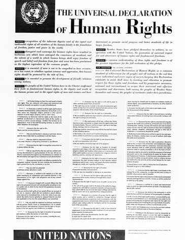
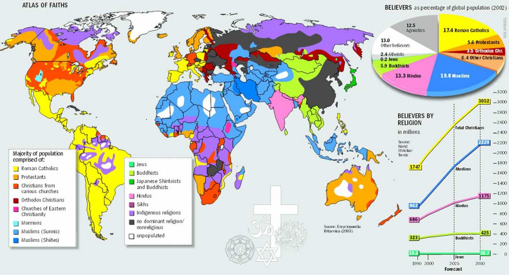
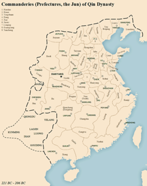
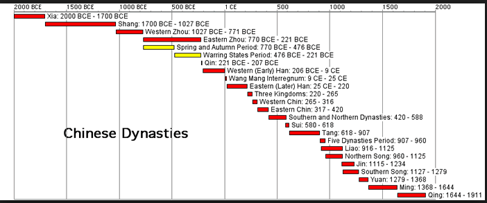
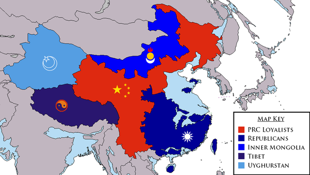
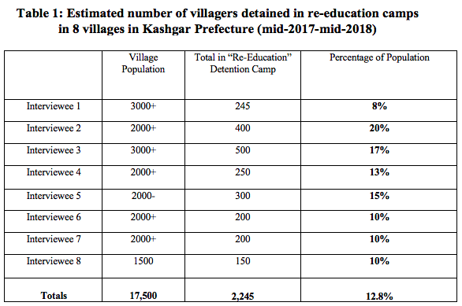
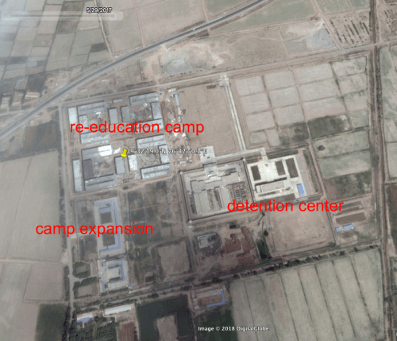

Who are the Uyghurs?
Who are the Uyghurs?
Uyghurs or Uighurs are a Turkic minority ethnic group, around 11 million, which mostly lives in the Xinjiang province of China, a region as large as Alaska. They have been silently, but also cunningly isolated and assimilated by their own government. They have been a target from the government, due to their religion, and how they disrupt the unity the government seeks.
They have been sent to re-education camps, where some parents are separated from their children, never to see them again.
As Article 2 on UN’s declaration of human rights state, “Everyone is entitled to all the rights and freedoms set forth in this Declaration, without distinction of any kind, such as race, colour, sex, language, religion, political or other opinion, national or social origin, property, birth or other status. “

The act of forcefully isolating and assimilating the Uigyurs clearly violates the statement above.
And this is a problem, as no one should be violated of the most basic human rights.
But before we criticized Chinas act, we must dive deeper into the government's motives, and why they hold such acts.
 Why Does the Government Treat the Uighurs as a Social Problem?
Why Does the Government Treat the Uighurs as a Social Problem?
China's stance on the case is that they are "responding to ethnic separatism and violent terrorist criminal activities". For the Chinese government, in a rather functionalist view, the Uighurs are a social problem as they disrupt the stability of the nation. They state that the Uigurs are "separatists" and "terrorists".

In the view of a conflict theorist, this is a problem as it creates inequality between the Uighurs, and the Han people. In China, the Uighurs are treated as a lesser person then the Han, due to its religious belief. This will create conflict between the Uighurs and the Chinese government.
To symbolic interactionists, the social problem arises as to the government images the Uighur, and their Muslim beliefs as something "Undesirable". People who trust the government will think differently about the Uighurs.
The History Behind the Govenments Mind.
China has a long history of Unification, and the fall of it. The Qin Dynasty, which spanned from 221 B.C. to 206 B.C. was the first to unify China.

After that, the nation would split into other nations, and unify, then spit, and unify again and again. Warlords would fight each other to become the next Emporer of Mainland China.

It could be that the reason behind China's obsession with unity comes from its rich history of unification, and fragmentation. whenever China unified, they were able to hold an unrivaled power against its neighbors.
But is China not already unified to, well, China?
China's most recent fragmentation was during the era after WWI and after WWII. The nation struggled on the choice of which idealogy to follow. There were the nationalist party and the communist party, who both wanted to unify China under their own belief.

There is a possibility that, after the civil war, the government grew to believe that if they do not unify the citizens themselves under a single ideology, they will fragment again, resulting in a loss of power against other nations.
Creating a common enemy amongst the nation has also been a tool many governments have used. Such as in South Korea, where the government, under a dictatorship, made the communists a common enemy, which in result strengthened the dictator’s power over the nation.
China now seems like it is using this tool. They are creating a common enemy, "Unifying" its citizens under the government’s own beliefs in the process and justifying the single party of China, CPC.
How are the Uighurs Affected?
With China's direct control over the Xinjiang providence, it is hard to obtain a direct feedback on how the lockdown is affecting the Uighurs.
But there are cases where people who experienced the incident, being detained to the re-education camp, was able to escape and be contacted to an interview.
And with the help of the intervewees, it was possible to gain data, at least parcailly, on how much Uighurs were affected.

https://www.nchrd.org/2018/08/china-massive-numbers-of-uyghurs-other-ethnic-minorities-forced-into-re-education-programs/
Another intervewee also mentions that " virtually every family had at least one member forced to attend day/evening re-education sessions. In this area". That would sum up to 450 per village on average, if the village were to have 600 residents.
It was also possible to learn the life of an uighur in the providence, with the help of Omurbek Eli, a escapee who was detained for "terrorist activities", while visiting his parents. He was able to escape from the help of the Kazakh government, but his family still remains in the providence.

He talks about his prison life, where he had to share a room with 23 other people, 70-80 percent being Uighurs according to the interviewee. His daily routine would start at 6 am, where he would have to make his bed in a militaristic style and attend a flag-raising ceremony at 7:30 am. Before breakfast, they were also made to sing a "red song", in praise of the Communist Party.
People who did not know Chinese (As many Uighurs did not speak Chinese as their main language) were taught how Chinese. Other lessons would include party laws, and red songs while having an exam every week. The instructors often would inform the detainees their trials and sentences, and their alleged offenses, in order to create fear.
He does mention that the food in the re-education camp was not as bad as a prison, as it consisted of rice gruel for breakfast and some meat for lunch and dinner. But he questions the motives, quoting "I think they sent me there because they wanted me to improve before returning. I had lost 40 kilograms (88 pounds) in prison.".
There are also words of incidents where the Uighurs were force-fed alcohol and pork, which are food that is prohibited to those who follow Muslim.
In short, it seems as the government hopes that the Uighurs will discard their Muslim beliefs and lives after their detention re-education camps. They plan to turn Uighurs, to their own model of how their citizens should be.
How Can it Be Addressed?
There has been a movement to stop the inhumane act. The so-called "Uighur Act" has been introduced in the US Congress (H.R.1025 - UIGHUR Act of 2019). It states that "This bill imposes sourcing restrictions and export controls related to China's mass detention of the Uyghurs, a predominantly Muslim Turkic ethnic group in Xinjiang province."
UN has also warned the Chinese government to stop such acts, quoting "We are recommending to China if this practice exists, to halt it. We are asking China to release people if they don’t have a legal ground to be detained". But despite the warning, the Chinese government denies their act, while the Chinese Foreign Ministry spokeswoman said that the UN does not have any factual basis and that Xinjiang's security and stability had risen dramatically.
She also mentions that “As for certain counterterrorism and stability maintenance preventive measures, I think that internationally this is in general use by lots of countries,”.
It seems as a warning from the UN is not enough to counter the problem, but it also seems as UN is not taking harsher measures against the incident. The social problem will not be fixed by mere warnings.
For an individual, it is hard to counteract the incident as it is being performed by a governmental level. The scale is too large, and will not be stopped without giving the Chinese government an appealing reason to do so.
But the bare minimum we can do is to reckognise the incident, and if possible, push for our own government to take a stance on the incident.
For groups such as the UN or other governments, I believe that they must recognize the problem more, reaching out to the ones who were able to escape the re-education camps. Again, warnings will do nothing to the Chinese government and their actions.
 Works cited
Works cited
“China: Massive Numbers of Uyghurs & Other Ethnic Minorities Forced into Re-Education Programs.” Chinese Human Rights Defenders, www.nchrd.org/2018/08/china-massive-numbers-of-uyghurs-other-ethnic-minorities-forced-into-re-education-programs/.
“Facts about China: RELIGION.” China Mike, 4 Dec. 2019, www.china-mike.com/facts-about-china/facts-religion/.
Hughes, Roland. “China Uighurs: All You Need to Know on Muslim 'Crackdown'.” BBC News, BBC, 8 Nov. 2018, www.bbc.com/news/world-asia-china-45474279.
Kyriakou, N. (2005, Apr 12). RIGHTS: CHINA TAGS MUSLIMS AS 'TERRORISTS' IN OIL-RICH REGION. Global Information Network Retrieved from http://ezproxy.fhda.edu/login?url=https://ezproxy.fhda.edu:2187/docview/457548543?accountid=38235
Nebehay, Stephanie. “U.N. Calls on China to Free Uighurs from Alleged Re-Education Camps.” Reuters, Thomson Reuters, 31 Aug. 2018, www.reuters.com/article/us-china-rights-un-idUSKCN1LF1D6.
Samuel, Sigal. “China Is Treating Islam Like a Mental Illness.” The Atlantic, Atlantic Media Company, 1 Dec. 2018, www.theatlantic.com/international/archive/2018/08/china-pathologizing-uighur-muslims-mental-illness/568525/.
Sherman, and Brad. “H.R.1025 - 116th Congress (2019-2020): UIGHUR Act of 2019.” Congress.gov, 22 Mar. 2019, www.congress.gov/bill/116th-congress/house-bill/1025.
Staff, RFA. “Interview: 'I Lost All Hope of Surviving'.” Radio Free Asia, Radio Free Asia, 31 Jan. 2018, www.rfa.org/english/news/uyghur/kazakh-01302018161655.html.
“Universal Declaration of Human Rights.” United Nations, United Nations, www.un.org/en/universal-declaration-human-rights/.
Xinjiang Oil Province, www.cnpc.com.cn/en/operatediol/201405/2a55baf2e8a9420187880810fe91728f.shtml.